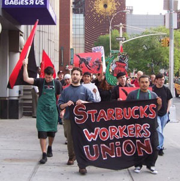
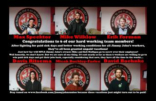

Submitted on Sun, 06/19/2011 - 1:02pm
By Adam Kader, In These Times, June 16, 2011.
This article is reposted in accordance with Fair Use Guidelines. The opinions of the author do not necessarily reflect those of the IWW and vice versa. The image included here was not included with the original article.
The decline of unions does not mean the end of the labor movement. Indeed, the last few years have seen a proliferation of new kinds of worker organizations and workers' rights campaigns. Some of the most exciting of late have been conducted by community-based groups (rather than workplace-based unions), such as the Coalition of Immokalee Workers and those part of the National Domestic Workers Alliance.
In Solidarity Unionism at Starbucks, a recent pamphlet published by PM Press, Daniel Gross and Staughton Lynd highlight an increasingly important feature of today’s labor movement—nonunion workers using direct action strategies protected by the National Labor Relations Act (NLRA)—while examining the Industrial Workers of the World’s (IWW)'s ongoing efforts to organize Starbucks.
Submitted on Sat, 06/04/2011 - 1:48pm
Company Credibility Erodes as NLRB Investigation over Firing of Six Whistleblowers Continues:
June 3, 2011 - Jimmy John's Workers Union & Industrial Workers of the World
Contacts: Max Specktor, 612-250-7309, Erik Forman 612-598-6205
MINNEAPOLIS- Two months after Jimmy John's fired six workers for blowing the whistle on a company practice of forcing sandwich-makers to work while sick, the IWW Jimmy John's Workers Union has released Minnesota Department of Health documents today revealing eight outbreaks of foodborne illness at franchises across the Twin Cities area in the past five years, seven of which were due to employees working while sick at the chain. The release of the documents seriously erodes the credibility of Minneapolis franchise owner Mike Mulligan who had previously claimed to reporters and employees that, "the company has made more than 6 million sandwiches during its nearly 10 years in business—and no one’s ever gotten sick from eating one." Two of the outbreaks, both caused by sick employees, were at the Mulligans' stores.
"This is smoking gun evidence not only of the seriousness of the public health risk caused by workers being forced to work while sick at Jimmy John's, it also proves that Jimmy John's franchise owner Mike Mulligan willfully lied to the media, the public, and his employees about his food safety track record. We will continue our fight for paid sick days for restaurant workers until Jimmy John's changes their policy to protect workers and the public," said Max Specktor, one of the fired whistleblowers.
Submitted on Sat, 06/04/2011 - 1:39pm
 Headlines:
Headlines:
- Wobblies Celebrate May Day Worldwide
- Worker-Owned Restaurant in Michigan Joins IWW
- International Solidarity with Cuban Comrades
Features:
- Obituary: Remembering Hazel Dickens
- The NEW Industrial Worker Book Review!
- Mr. Block Protests on May Day
Download a Free PDF of this issue.
Submitted on Sat, 05/14/2011 - 1:52pm
May 9, 2010: Grand Rapids, MI - Bartertown Diner and Roc's Cakes--a raw, vegan/vegetarian restaurant opening in a couple weeks in downtown Grand Rapids has decided to go "wobbly." The seven member team which constitutes the worker-run establishment have all decided to join the old and storied Industrial Workers of the World labor union.
"It just seemed like the perfect fit for us. After meeting with members of the IWW it was clear that we all want the same things and being that we really don't want to be just another restaurant it seemed logical," said Ryan Cappelletti cook at the new Diner.
Bartertown Diner and Roc's Cakes, which will be located at 6 Jefferson St., joins a growing list of worker-owned IWW shops. The Red and Black Cafe in Portland, Oregon and Just Coffee in Madison, Wisconsin being two others.
"We are very happy that Bartertown and Roc's Cakes has decided to go IWW and believe it can only help in our larger campaign to raise the standard of living and benefits for all food and beverage workers in Grand Rapids, said Shannon Williams, Treasurer of the local IWW branch.
Submitted on Thu, 05/05/2011 - 5:58pm
Embattled Kosher Food Factory Faces Growing Retail Consensus on Workers' Rights Abuses
New York, NY- Morton Williams, a well-known chain of twelve supermarkets, has discontinued the sale of Sonny & Joe's hummus over concerns about workers' rights violations at Flaum Appetizing Corp., the Brooklyn-based producer and owner of the Sonny & Joe's brand. Morton Williams joins a critical mass of prominent retailers including Fairway, Zabar's, and Food Emporium that have dropped Sonny & Joe's hummus after immigrant workers began speaking out against pervasive wage theft, abusive management, and denial of benefits at Flaum. Workers are waging an energetic campaign with the Focus on the Food Chain initiative to bring Flaum Appetizing and its owner Moishe Grunhut into compliance with the rule of law and to recover illegally withheld compensation. 45 supermarket and grocery store locations have pulled Sonny & Joe's hummus off the shelves amid the heated dispute over Flaum's lack of respect for immigrant workers.